MuscuTrack — trois directions de marque
L’UX ne bouge pas (identity.md §1 à §5 et §7, §8). Seule l’interface change : couleur, typo, logo, formes et un élément signature. Chaque direction garde les règles de clarté : un seul accent réservé à la prochaine action, contrastes ≥ 4,5:1 en clair et en sombre (y compris le texte posé sur l’accent), chiffres en grand et tabulaires, cibles ≥ 48 / 56 px, états jamais portés par la couleur seule.
« J’aime bien l’ux de l’appli mais pas trop l’ui. Je trouve que la couleur orange est pas folle et même si je veux que l’appli reste claire, ça manque un peu d’identité de “marque”. »
Recommandation : Fonte
C’est la seule des trois dont on reconnaît l’app sur une capture sans voir le logo : graphite + jaune + chiffres condensés, c’est le vocabulaire de la salle (disques, marquages, chronos). Elle sert aussi la clarté : le jaune est l’aplat le plus visible qui soit pour « la prochaine chose à faire », avec un texte encre à 12,3:1, et il garde la même valeur en clair et en sombre. Le condensé rend les chiffres héros plus hauts à taille égale. Repère est l’option la plus sûre et la plus fidèle aux mots « clair, calme, précis », mais le bleu est générique. Élan est la plus singulière mais la plus bruyante.
Détails et modifications de identity.md §6 à valider : docs/brand/README.md.
Référence
Actuel
Inter partout, orange #E8481C, gris chaud. Clair et lisible, mais sans signature : rien ne dit « MuscuTrack » en dehors du titre.
Palette actuelle (identity.md §6)
| Rôle | Clair | Contraste clair | Sombre | Contraste sombre |
|---|---|---|---|---|
| Fond | #F7F7F4 | texte 17,2:1 | #0F1114 | texte 17,0:1 |
| Surface (cartes) | #FFFFFF | texte 18,5:1 | #181B20 | texte 15,5:1 |
| Texte principal | #111418 | 18,5:1 / surface | #F2F3F5 | 15,5:1 / surface |
| Texte secondaire | #5B636E | 5,7:1 (pire cas) | #9AA3AF | 6,8:1 (pire cas) |
| Bordure | #E3E5E8 | décor (non textuel) | #2A2F36 | décor (non textuel) |
| Accent (prochaine action) | #E8481C | texte posé 4,7:1 · sur fond 3,6:1 | #FF6A3D | texte posé 6,6:1 · sur fond 6,6:1 |
| Succès / record | #137A4B | 5,0:1 | #34C27C | 7,5:1 |
| Danger | #C62828 | 5,2:1 · texte posé 5,6:1 | #FF6B6B | 6,2:1 · texte posé 6,8:1 |
| Texte sur l’accent | #111418 | 4,7:1 | #0F1114 | 6,6:1 |
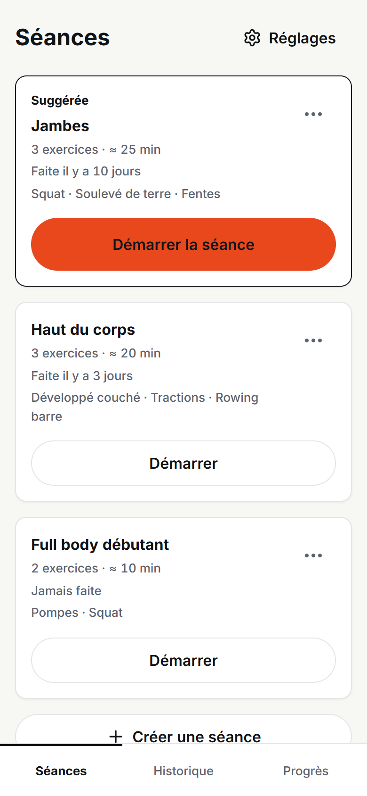
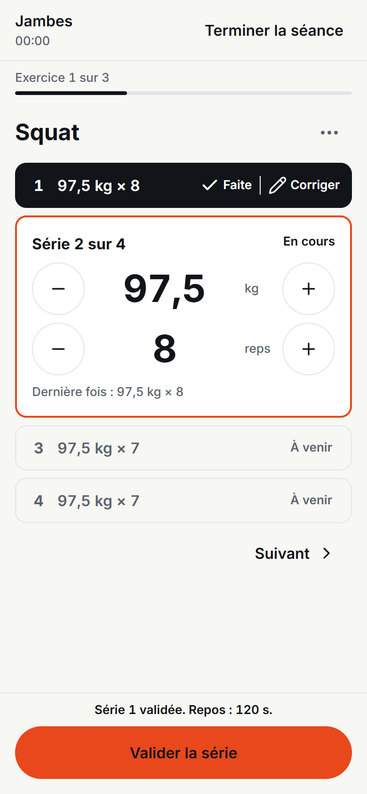
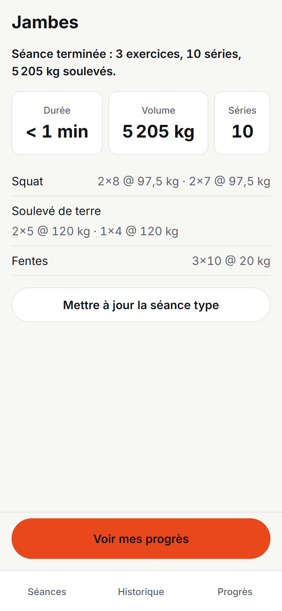
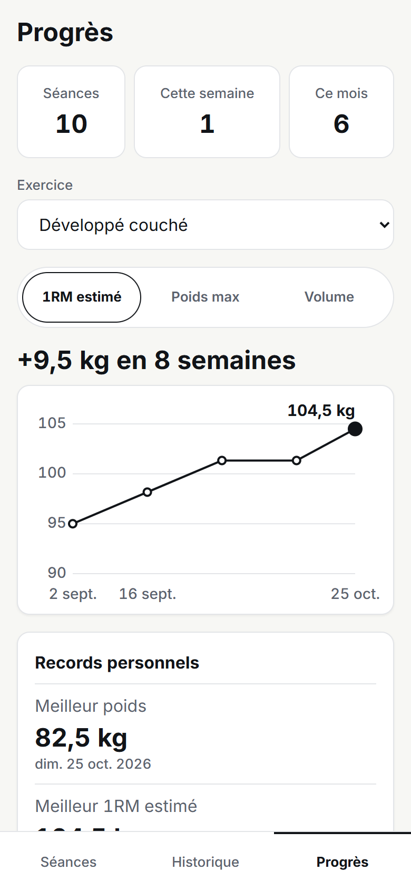
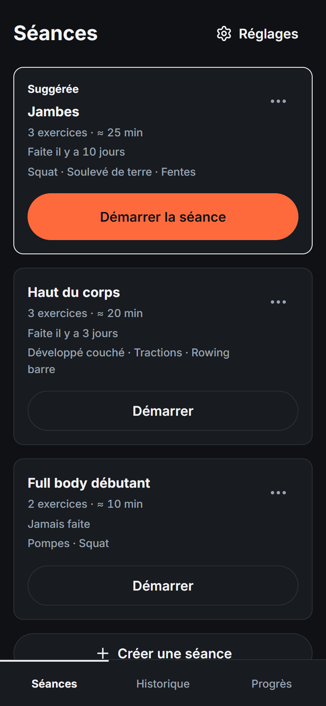
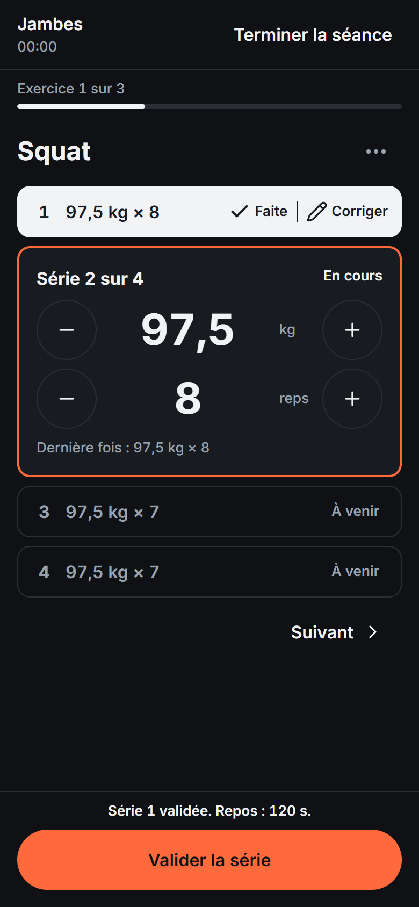
Direction 1
Fonte
La salle de muscu, pas le spa : graphite, jaune signal et chiffres condensés, comme le marquage d'un disque en fonte.
- robuste
- direct
- franc
Logo et icône
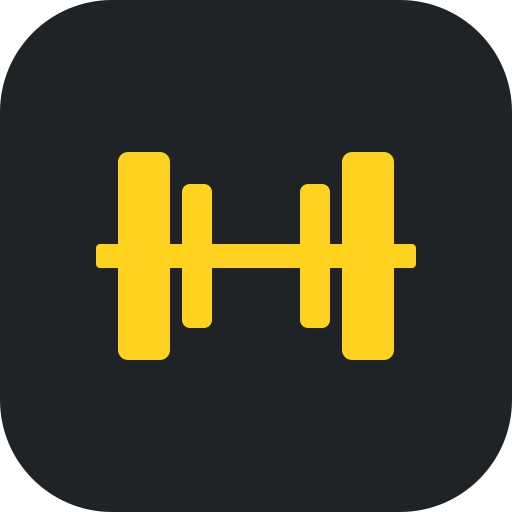
96 px · 48 pxDans l’app, le logo est monochrome (logo-app.svg, couleur du texte) : la couleur de marque ne vit que dans l’icône.
Typographie
SQUAT · 97,5 kg
0123456789
Barlow Condensed 700 (OFL) — titres d’écran en capitales et chiffres héros ; Inter pour le corps. Chiffres tabulaires (tnum) vérifiés. Échelle inchangée : 40 / 24 / 16 / 13.
Palette (format identity.md §6) et contrastes mesurés
| Rôle | Clair | Contraste clair | Sombre | Contraste sombre |
|---|---|---|---|---|
| Fond | #F3F3F0 | texte 16,0:1 | #101113 | texte 17,0:1 |
| Surface (cartes) | #FFFFFF | texte 17,8:1 | #1A1C1F | texte 15,3:1 |
| Texte principal | #16181B | 17,8:1 / surface | #F3F3EF | 15,3:1 / surface |
| Texte secondaire | #585E66 | 5,9:1 (pire cas) | #A2A6AC | 7,0:1 (pire cas) |
| Bordure | #D9DAD5 | décor (non textuel) | #2F3236 | décor (non textuel) |
| Accent (prochaine action) | #FFD21F | texte posé 12,3:1 · sur fond 1,3:1 | #FFD21F | texte posé 12,3:1 · sur fond 13,0:1 |
| Succès / record | #137A4B | 4,8:1 | #34C27C | 7,4:1 |
| Danger | #C62828 | 5,1:1 · texte posé 5,6:1 | #FF6B6B | 6,2:1 · texte posé 6,8:1 |
| Texte sur l’accent | #16181B | 12,3:1 | #16181B | 12,3:1 |
Graphite de marque : #202326 clair · #000000 sombre — bandeau + barre d’onglets · texte blanc 15,8:1 · onglets inactifs #A9AEB4 7,1:1
Élément signature
La barre crantée : la progression de séance est découpée en un cran par exercice (on compte les crans comme des disques sur une barre). Même logique que l’icône : une barre chargée. S’y ajoutent le bandeau et la barre d’onglets graphite, qui portent la marque sans toucher à l’accent.
Formes
Rayons 6 px (cartes) et 8 px (boutons) au lieu de 12 / 999 : formes droites. Pas d’ombre. Bouton principal jaune cerclé d’encre 2 px en clair (le jaune seul ne fait que 1,3:1 sur le fond). Série en cours : contour d’encre + bande jaune de 8 px en tête.
Point de vigilance : Le jaune ne peut jamais servir de trait ou de texte sur fond clair (1,3:1) : il est toujours un aplat avec texte encre (12,3:1) ou doublé d’un contour d’encre. Règle simple, mais à tenir partout.
Appliquée aux vrais écrans (390 × 844)
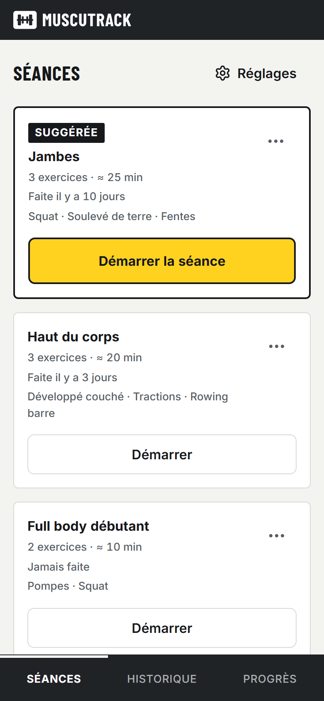
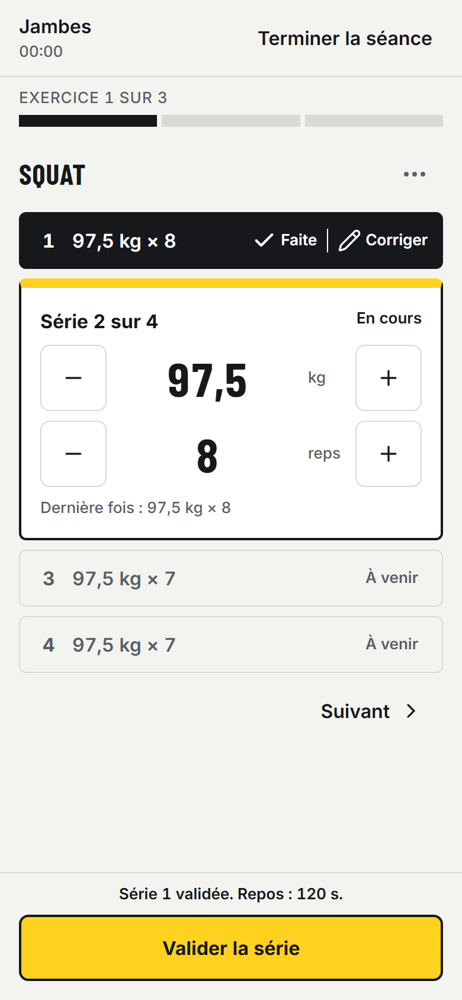
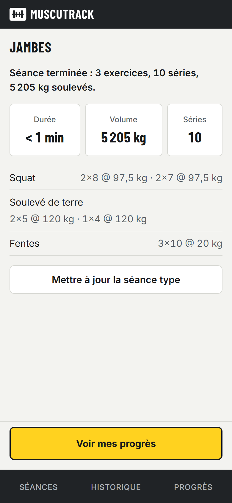
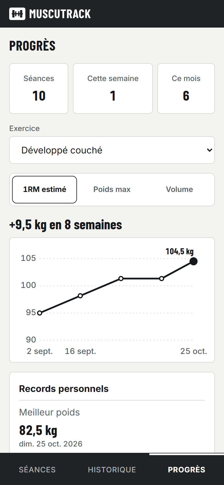
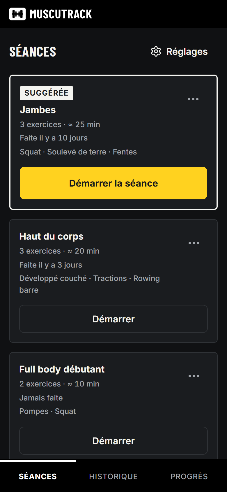
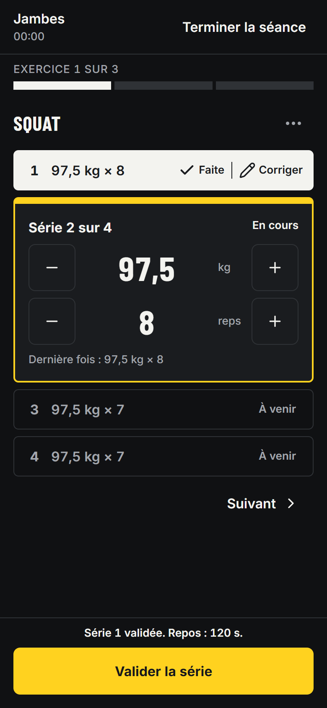
Jetons : docs/brand/fonte/tokens.css
Direction 2
Repère
L’instrument de mesure : un bleu cobalt sur un blanc légèrement bleuté, des chiffres « techniques » et des graduations qui disent où on en est.
- précis
- calme
- technique
Logo et icône
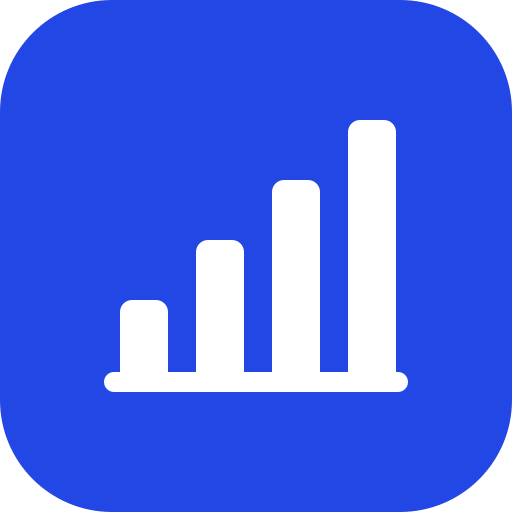
96 px · 48 pxDans l’app, le logo est monochrome (logo-app.svg, couleur du texte) : la couleur de marque ne vit que dans l’icône.
Typographie
Squat · 97,5 kg
0123456789
Space Grotesk 700 (OFL) — titres, noms de séance et tous les chiffres ; Inter pour le corps. Chiffres tabulaires (tnum) vérifiés. Échelle inchangée : 40 / 24 / 16 / 13.
Palette (format identity.md §6) et contrastes mesurés
| Rôle | Clair | Contraste clair | Sombre | Contraste sombre |
|---|---|---|---|---|
| Fond | #F2F5FA | texte 16,7:1 | #0A0E18 | texte 17,2:1 |
| Surface (cartes) | #FFFFFF | texte 18,2:1 | #131A29 | texte 15,5:1 |
| Texte principal | #0E1526 | 18,2:1 / surface | #EEF2FA | 15,5:1 / surface |
| Texte secondaire | #536079 | 5,8:1 (pire cas) | #9AA5BC | 7,0:1 (pire cas) |
| Bordure | #D9DFEA | décor (non textuel) | #263049 | décor (non textuel) |
| Accent (prochaine action) | #2347E5 | texte posé 6,8:1 · sur fond 6,2:1 | #7D9BFF | texte posé 7,4:1 · sur fond 7,4:1 |
| Succès / record | #127A4F | 4,9:1 | #34C27C | 7,6:1 |
| Danger | #C62828 | 5,1:1 · texte posé 5,6:1 | #FF6B6B | 6,3:1 · texte posé 6,9:1 |
| Texte sur l’accent | #FFFFFF | 6,8:1 | #0A0E18 | 7,4:1 |
Voile cobalt (série en cours) : #EEF2FF clair · #18213A sombre — texte 16,3:1 / 14,2:1 · secondaire 5,7:1 / 6,4:1
Élément signature
La règle graduée : une graduation par exercice sous la barre de progression, graduations en pointillés dans le graphique, et le même motif croissant dans le logo et l’icône. La série en cours reçoit un voile cobalt très léger (#EEF2FF) : la seule zone teintée de l’écran est celle où l’on agit.
Formes
Cartes 16 px (plus doux que 12), boutons pilule conservés. Ombre très légère en clair, aucune en sombre. Fond teinté bleu froid #F2F5FA au lieu du gris chaud.
Point de vigilance : Le bleu est la couleur la plus répandue des apps de santé : la marque repose donc davantage sur la typo et la règle graduée que sur la teinte.
Appliquée aux vrais écrans (390 × 844)
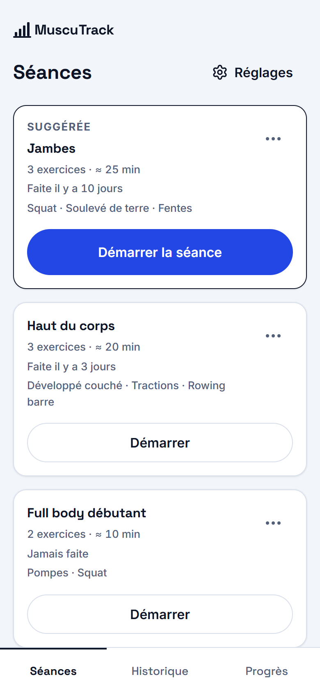
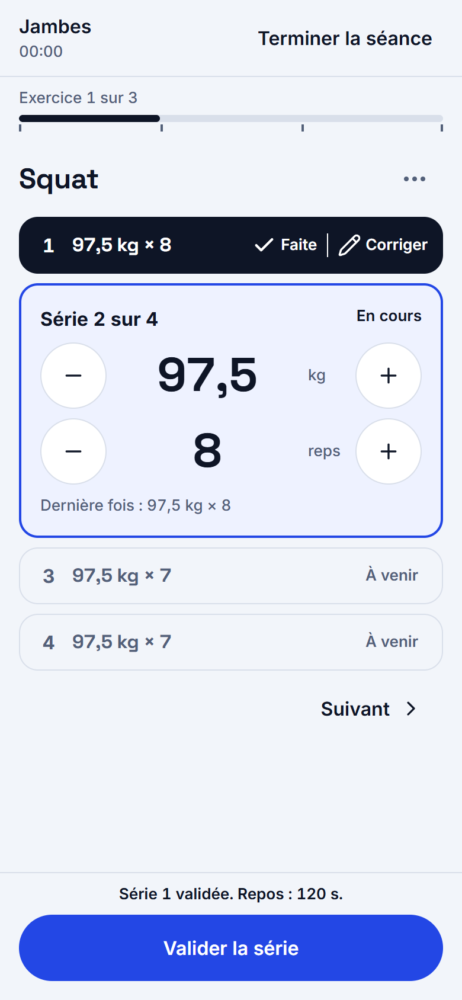
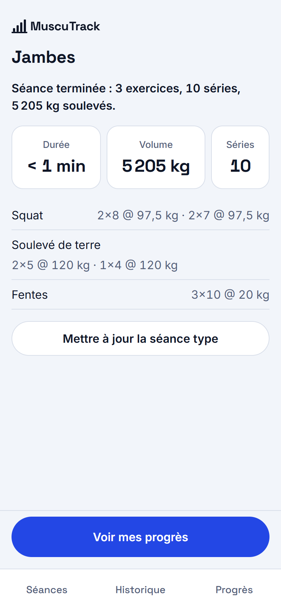
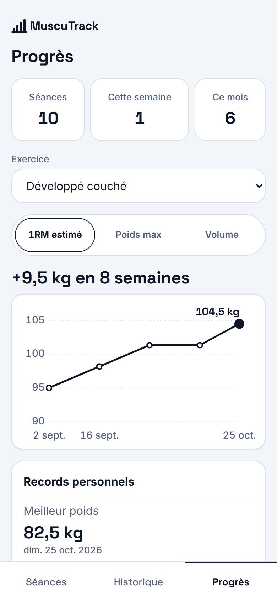
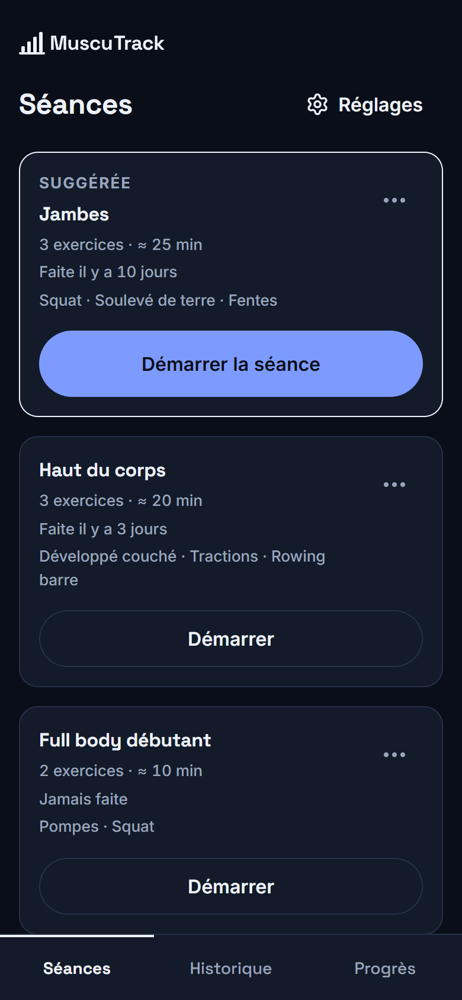
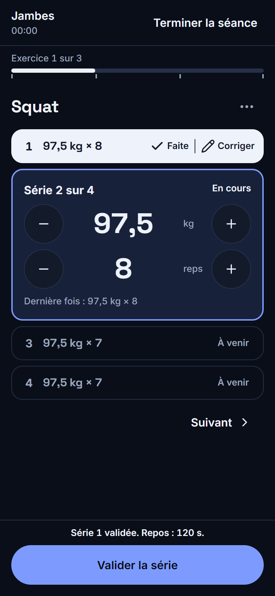
Jetons : docs/brand/repere/tokens.css
Direction 3
Élan
L’énergie du mouvement, sans bruit : un magenta profond, des titres larges et pleins, une seule pente de 12° qui revient partout.
- énergique
- fier
- moderne
Logo et icône
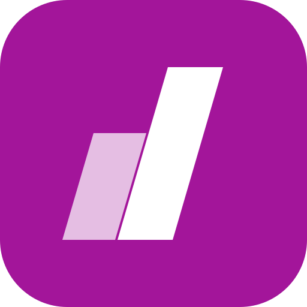
96 px · 48 pxDans l’app, le logo est monochrome (logo-app.svg, couleur du texte) : la couleur de marque ne vit que dans l’icône.
Typographie
Squat · 97,5 kg
0123456789
Unbounded 800 (titres) / 600 (chiffres) (OFL) — très large ; Inter pour le corps. Chiffres tabulaires (tnum) vérifiés. Échelle inchangée : 40 / 24 / 16 / 13.
Palette (format identity.md §6) et contrastes mesurés
| Rôle | Clair | Contraste clair | Sombre | Contraste sombre |
|---|---|---|---|---|
| Fond | #F8F5F7 | texte 17,0:1 | #120D14 | texte 17,1:1 |
| Surface (cartes) | #FFFFFF | texte 18,4:1 | #1D1720 | texte 15,7:1 |
| Texte principal | #18121B | 18,4:1 / surface | #F6F0F7 | 15,7:1 / surface |
| Texte secondaire | #64596A | 6,1:1 (pire cas) | #ADA2B3 | 7,2:1 (pire cas) |
| Bordure | #E7E0E8 | décor (non textuel) | #342B39 | décor (non textuel) |
| Accent (prochaine action) | #A3159A | texte posé 6,7:1 · sur fond 6,2:1 | #F07BE8 | texte posé 8,0:1 · sur fond 8,0:1 |
| Succès / record | #137A4B | 5,0:1 | #34C27C | 7,7:1 |
| Danger | #C62828 | 5,2:1 · texte posé 5,6:1 | #FF6B6B | 6,3:1 · texte posé 6,9:1 |
| Texte sur l’accent | #FFFFFF | 6,7:1 | #120D14 | 8,0:1 |
Élément signature
Le biais : étiquettes d’état en encre coupées à 12° (« Suggérée », « En cours »), crans de progression biseautés, et la même double barre oblique dans le logo et l’icône.
Formes
Rayon 14 px pour cartes ET boutons (fin de la pilule). Ombre légère en clair. Fond très légèrement mauve #F8F5F7.
Point de vigilance : La plus singulière, mais la moins « calme » des trois : Unbounded est très large (« +9,5 kg en 8 semaines » remplit toute la ligne à 24 px) et le magenta clair du mode sombre (#F07BE8) est vif. À tester sur des noms d’exercice longs.
Appliquée aux vrais écrans (390 × 844)
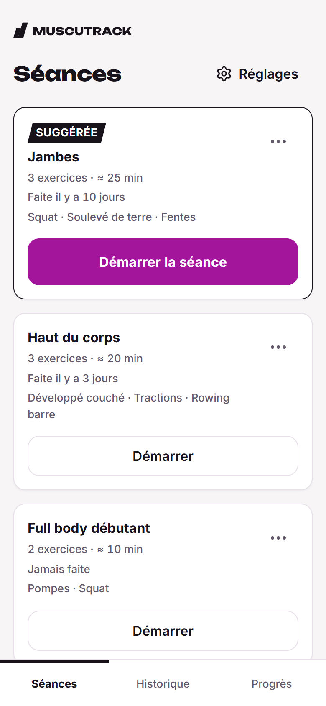
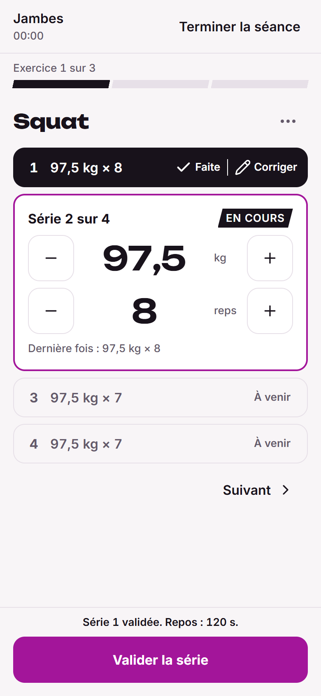
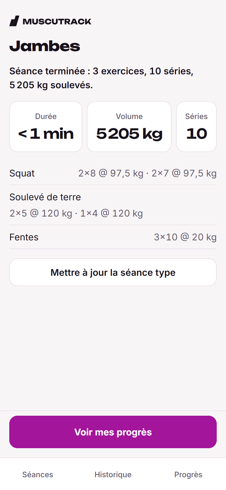
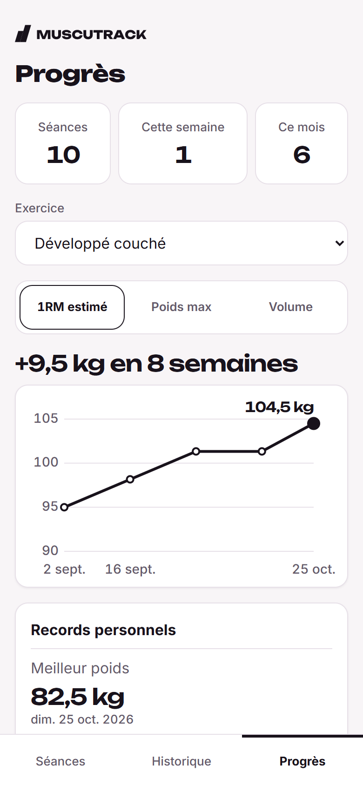
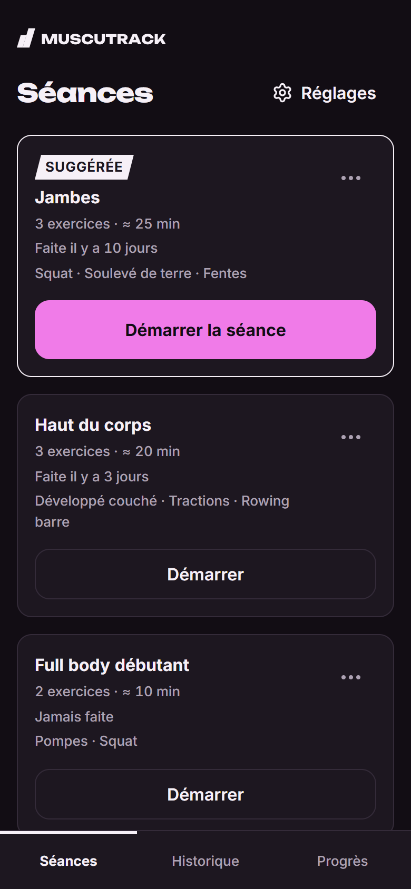
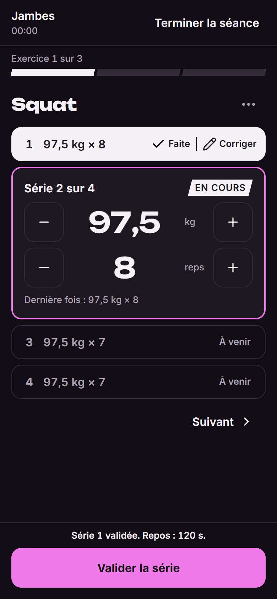
Jetons : docs/brand/elan/tokens.css
Captures réalisées sur l’app réelle (localhost, 390 × 844, données réalistes) en injectant tokens.css et le logo, sans modifier le code. La durée « < 1 min » du récap vient de la séance jouée par le robot. Polices OFL-1.1 copiées dans docs/brand/fonts/ pour cette planche.